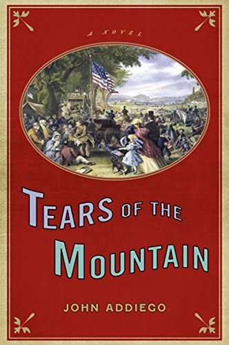

© 2015 Black Oak Books
mystery/thriller/literature
The Jaguar Tree
The Jaguar Tree...a novel in which tropical storm winds topple a tree in Nicaragua, unearthing the bones of three men killed twenty years ago. Frank Alvarado, an American cop who’s come to Central America on a personal mission to retrieve a little boy, is urged by a priest to help in the murder investigation. Traveling down the San Juan River in search of the boy, Alvarado gets entangled with drug-runners in a web of deceit leading to the boy’s whereabouts: the hidden compound of El Tigrillo (The Jaguar), a sadistic mercenary commander. Here, in the heart of the jungle, Alvarado finds the source of old crimes and new as he discovers the identity of the triple murderer.
view on amazon.com |
view on goodreads

© 2010 Unbridled Books
historical/literature
Tears of the Mountain
Tears of the Mountain chronicles a single day in one man's life—July 4, 1876—along with a series of flashbacks that all lead up to an eventfulCentennial Independence Day celebration inSonoma, California. Over the course of this surprisingly pivotal moment in his life, Jeremiah McKinley prepares for the celebration and for a reunion with old friends and family. However, as he reflects on past love, the hazardous pioneer journey of his youth across the continent from Missouri, and the many violent conflicts of the West, voices of the long dead come to him, while old wounds and enmities resurface, threatening everything he holds dear. Furthermore, a series of mysterious notes and messages follow him throughout the day. When a visiting senator is found dead, suspicion leads to his old mentor, Professor Applewood, whose sudden disappearance from the festivities makes McKinley a suspected accessory to a fugitive. John Addiego fills this tale of America’s coming of age with wit and lively prose, seamlessly moving back and forth through time in a novel that recognizes both our darker side and our promise.
view on amazon.com |
view on goodreads

© 2008 Unbridled Books
story story/literature
The Islands of Divine Music
The Islands of Divine Music is a novel of five generations of an Italian-American family finding its place in the New World. Against a backdrop of Immigration, Prohibition, the Cuban Missile Crisis, the Vietnam War, and the new millennium, five generations of the Verbicaro family make their way from Southern Italy to San Francisco as each character brushes up against some aspect of the divine.
view on amazon.com |
view on goodreads